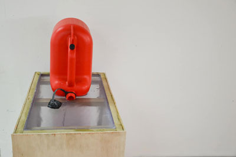
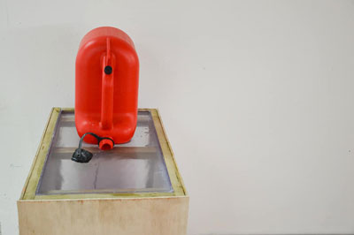

Cash(2019)
")
boite acier brosser, à billet
boite acier brosser, à billet
")
2éme version d'une béquille motorisé
")
Dans une piéces fermé actionnement de différents élément élèctonique
CCRRSS "le bleu" (2019) petit robot autoritaire des force de l'ordre
") 

")
Aux XIeme siecle le permier forage d'un puit de petroler eux lieux aux Etats-Unis. Depuis le pétrole à construit la fortune de plusieur homme d'Affaire comme la fammille Rodfiled. L'explotations de ces resources fragile la planet en pousant celles ci dans ces derniers retranchement.
La fontaine d'essence, un bidon de 10l renverser sur un socle en bois. Des bruits de machine se repéte, pendant que dans le fond le song de vomisement se retrouve dans le bidon d'essence qui recrache ses drenier ressorce avant que son bac ne déborde.
La Fontaine d'essance montre le monde et l'exploitations des ressorces ainsi que la maladie dans le quelle nous plongon le monde.

MécaCarton (2018) piéces réaliser pour la deuxiéme étidion du S.M.E.D.A.R est une machine qui fonction avec des éslastique est des énrenage en Cartoon

Elle peut constituer le seul appui d'une figure ou le support nécessaire d'une forme incapable de tenir debout toute seule. Dans le Dictionnaire abrégé du Surréalisme (1938), Dalí en donne la définition suivante : "Support en bois dérivant de la philosophie cartésienne. Généralement employé pour servir de soutien à la tendresse des structures molles." En sport de combat, une béquille est le nom d'une attaque qui consiste à donner un coup de genou dans la cuisse ; En médecine, une béquille est un support aidant les personnes infirmes à avancer.
la béquille est un symbole de fragilité tout autant physique que psychologique qui est à la recherche d’équilibre et de stabilité. Se cache derrière le tromatisme de la violence et les blessures, qui peut resté.
Béquille(2018) est une béquille retournée, fixée et motorisé, qui réalise une chorégraphie programmer, la béquille devient son contraire, inutilisable , il est difficile d’avancer avec (elle est fixée à une planche de bois) pourtant motorisée elle chercher à marcher, se tortillant en hochant la seul partie encore mobile, comme un appelle a l’aidée, ou a des moment provocant rappellent des rafales de mitraillette. les séquences programmées du moteur donne à la béquille tout son sens théâtrale, au début du programme l’on peut entendre trois coups sinifiant la tombé de rideaux, annoncent le début du programme et de la piéces.
Béquille(2018) est une vision satirique sur les conséquence des conflit qui atteignent leur acteur, la béquille dans se sens représente le solda et l’infirme, le civile et la victime, elle donne a réfléchir sur cet objet, qui pourrait devenir obsolète, avec la venue des technologies. Qui sait, les béquilles seront peut êtres dans 100ans remplacées par des prothèses robotisées ?


Le Bending consiste à détorner le courrant dans un circuit élèctrique, en rajoutant des composants, ou en déviant le courant élèctrique par un chemin plus court ou non si il passe par des composant.
Ce document pdf est un livret réalisé au cours de cette années montrant mes différent testes sur différents jouer pour enfant, transformant le son de chaque jouers, par des interrupteurs, des potentiometres, et des sorties son, pour ensuite pouvoir branché les instruments à d'autre sortie son que celle déjà présente dans le jouet.


Oh yeah est une vidéos en stop motion montrant des d'excercices de musclulasion sur une musique du même titre. cette vidéos essayer de montre se qui se passe dans la tête du bodybulder.
L'Albatros est une video d'après le poéme L'albatrose de Charles Beaudelaire. cette videos est faite de plusieur dessin et d'une composition à la guitare sur la quelle l'on entend le poéme.